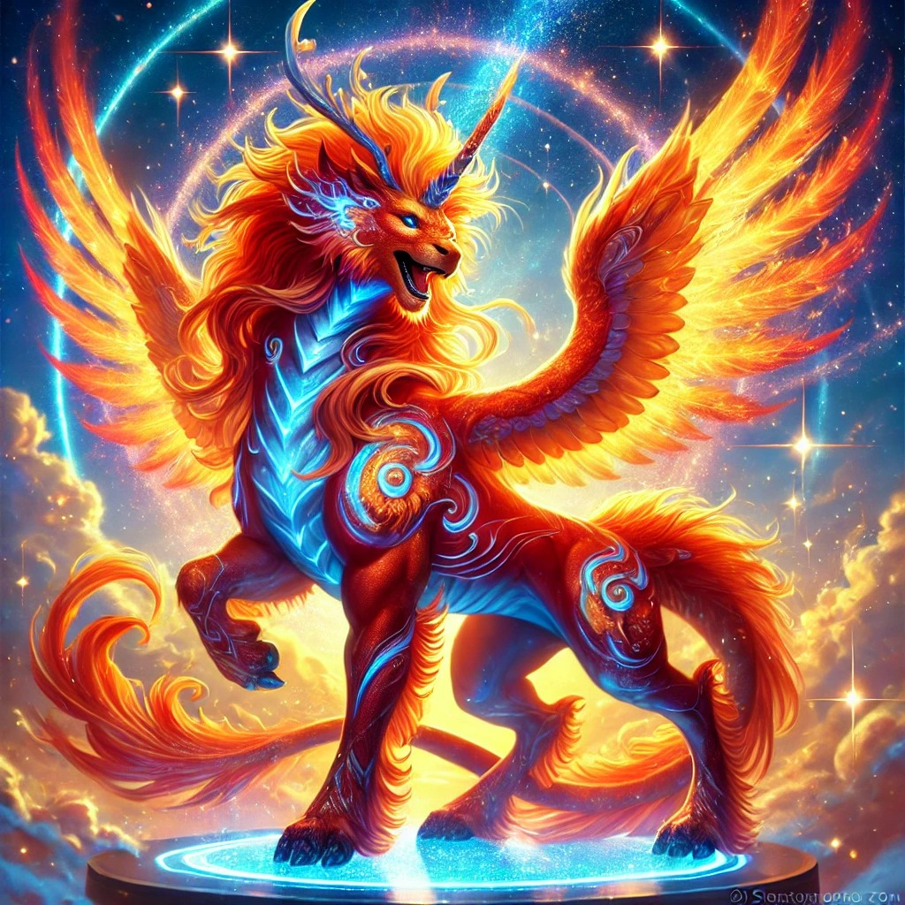
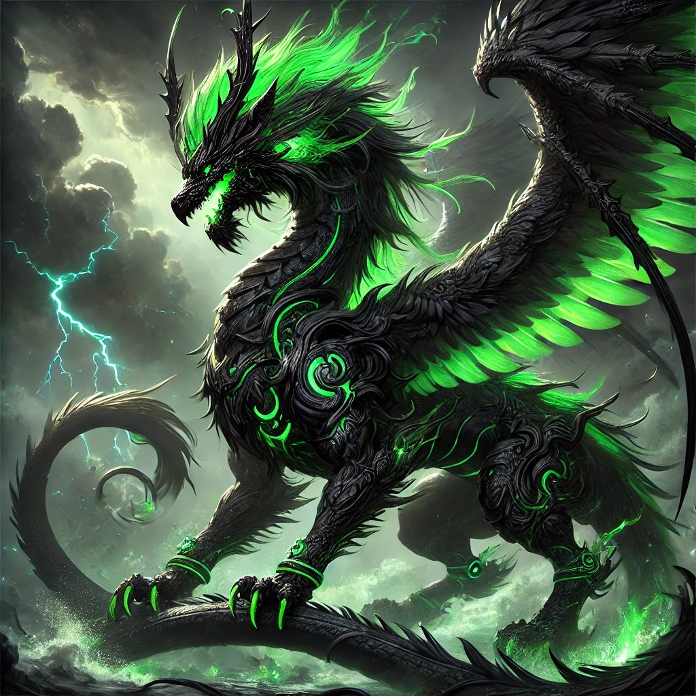
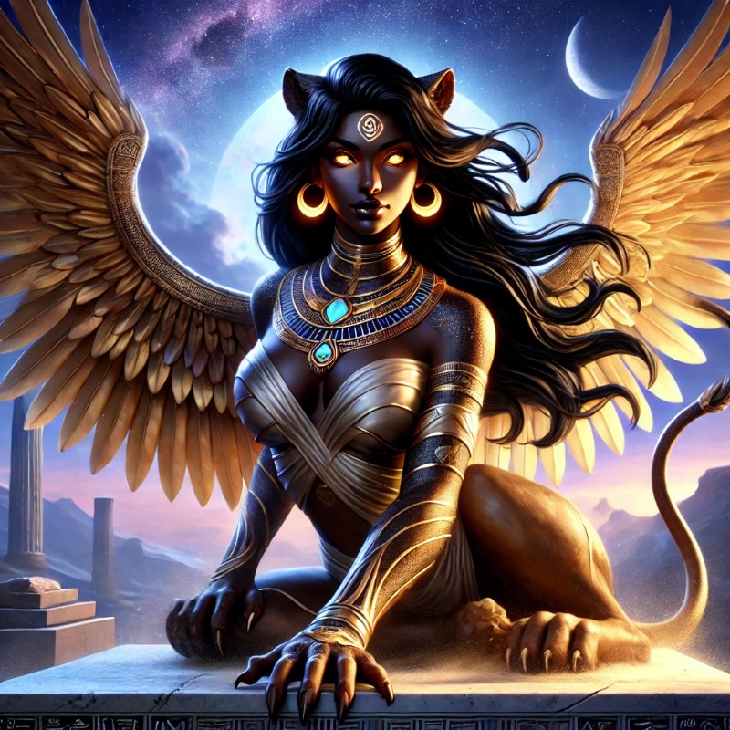
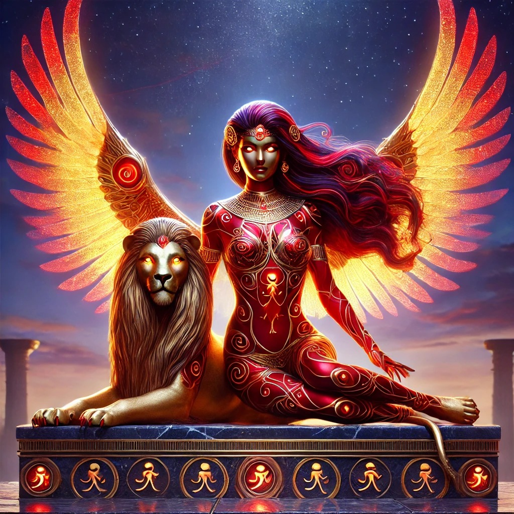

Rao'Kai, Llama del Buen Rollazo
 Donde llega, sube la vibración. Su risa resucita ánimos, y su fuerza anima hasta a los dioses con resaca.
Un ser mitológico asiático, mezcla de dragón, unicornio y fuego celestial. Símbolo de alegría pura, fuego interno y nobleza indestructible.
Extrovertido como un meteorito con flow. Levantas el ambiente solo con entrar. Fiel, fuerte y siempre con chispa.
Nombre: Kirin del Amanecer Risueño
Poder: Transforma el ambiente. Da fuerza a los suyos. Quema lo que ya no sirve con gracia divina.
Símbolo: Fuego azul con sonrisa mística.
Nekhbet, La Esfinge Renacida
 Ella no habla mucho, pero cuando lo hace, el mundo escucha. Poder. Sabiduría. Silencio imponente.
Introvertida, fuerte, protectora. No se rinde. No necesita ser vista para ser sentida. Siempre firme, siempre despierta.
Luz: Inspiras sin buscarlo. Tu sola presencia eleva.
Sombra: A veces olvidas que ya brillas... incluso en silencio.